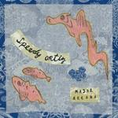

Music Reviews
-

True Widow Circumambulation
The Texan "stonegaze" trio showcase the idiosyncrasies of doom metal with the same minimal, acute rhythmic precision of their previous efforts.
Juan Edgardo Rodríguez reviews... -

Speedy Ortiz Major Arcana
Finally, a 90s throwback band who really sound like they'd have deserved a place in the indie rock canon.
Stephen Wragg reviews... -
Various Artists Kitsuné Soleil Mix 2 (mixed by Gildas Kitsuné and Jerry Bouthier)
Fans of the Kitsuné record label will know exactly what to expect from this compilation; summery, shiny electro-pop from some of the label’s strongest signings.
Ladies and gentlemen, the summer has arrived. -

Deap Vally Sistrionix
Lindsey Troy and Julie Edwards are a pair of knitting fanatics who love blues. These naughty girls must be a father's nightmare!
Carl Purvis reviews... -

Emily Barker & The Red Clay Halo Dear River
A year ago, Emily Barker & The Red Clay Halo were performing at the Olympic Opening Ceremony in front of an unfathomly big audience. Now what?
Joe Rivers like to imagine this album's title is addressed to him personally... -

Daughn Gibson Me Moan
The Carlisle Pennsylvania arranger's genre-bending follow up to All Hell leverages outré electronic flourishes and borderline kitsch elements with a sweeping masculinity on display.
Juan Edgardo Rodríguez reviews... -
Master Musicians of Bukkake Far West
With Far West, the ensemble psych collective known as Master Musicians of Bukkake immerse listeners with texturized odysseys and folk-enriched…well, you know.
Sean Caldwell holds his nose, shuts his eyes and mentally prepares for the inevitable… -

Austra Olympia
Following on from 2011's well-received debut, the Canadian sort-of band/sort-of solo act are back with another collection of operatically miserable dance music.
Mark Davison is no stranger to having a good cry in the middle of the dancefloor... -

Emika DVA
Innovative dubstep producer Ema Jolly tries a little too hard to build upon her excellent self-titled debut, resulting in a scattered, hit-and-miss affair.
Stephen Wragg reviews... -
Sigur Rós Kveikur
Despite releasing an album last year and touring almost non-stop since August, everyone's favorite Icelandic post-rockers have done it again.
Forrest Cardamenis checks Richter scale...